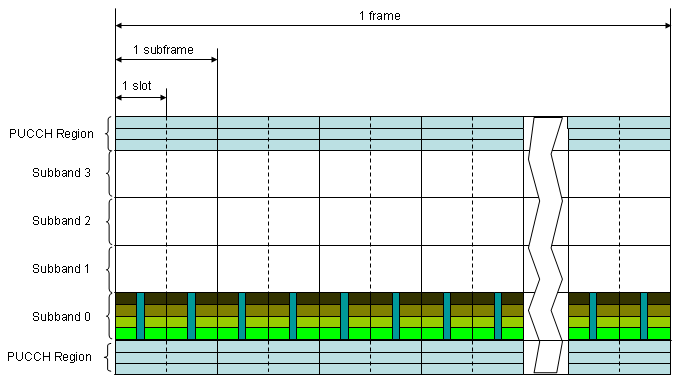
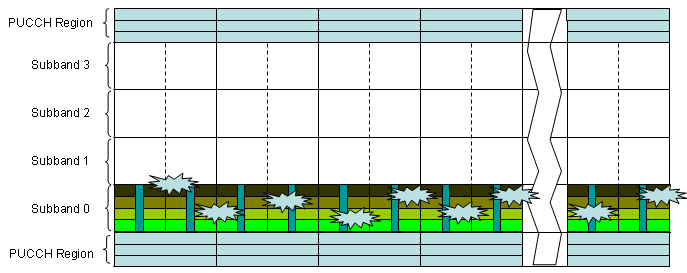
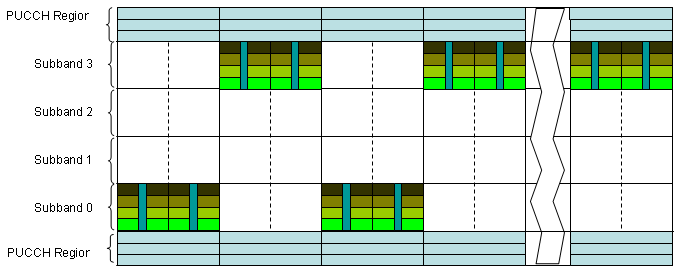
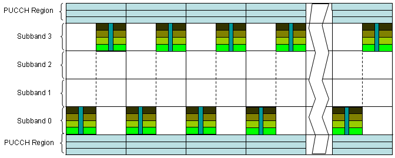
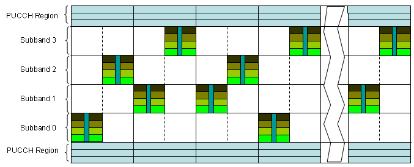
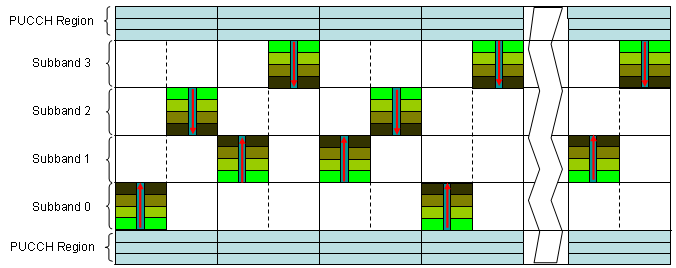
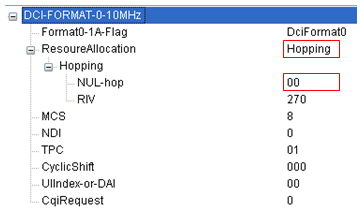
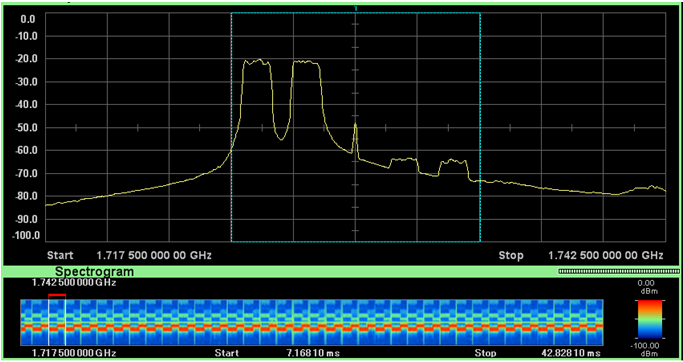
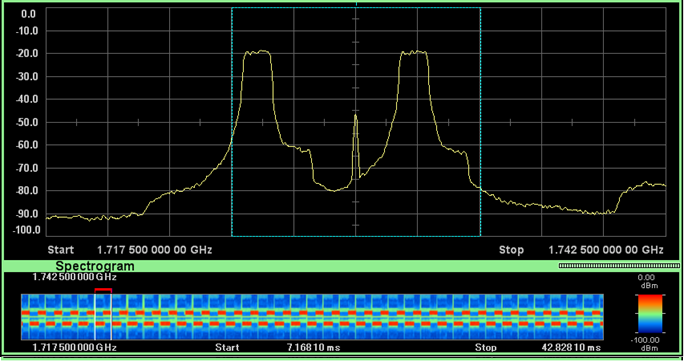
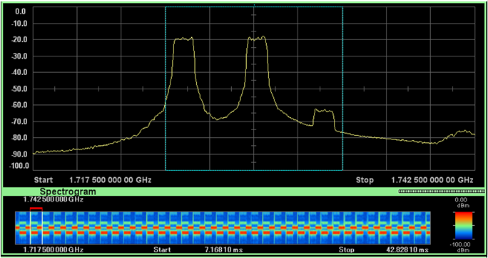

LTE Quick Reference Go Back To Index Home : www.sharetechnote.com
Everybody would know what the frequency hopping is ? It is a special transmission technique sending data with changing crarrier frequency in a certain pattern. Same definition applies to LTE frequency hopping as well.
So I will talk more on why we need freuqency and what kind of hopping pattern it use. One think to be noticed is that LTE use frequency hopping only for Uplink.
Following is the illustration of a uplink frame. I allocated a resource for a user at a portion of the operation band and the location does not changes throughout the frame.

With a bad luck, what if some impairment happens at the specific frequency region as shown below that the data is carried. In this case, the data for the poor user will be currupted so badly.

How can we avoid this kind of issue ? There is no perfect solution for this, but there may be many partial solutions for this. Frequency hopping can be one of those partial solutions. If the frequency (basically Start RB of the data) changes, large portions of the data would be able to avoid the impairment even thopugh there still be some unlucky data hit by the noise.
Now let's think of what kind of hopping pattern (method) is used in LTE.
First we can think of a pattern as follows. As you see, frequency change (hopping) does not happens within a subframe. It happens only between a subframe and another subframe. This kind of hopping is called "inter subframe" hopping. Another characteristics you may notice from the following figure would be that the hopping pattern is simple and does not change.

Next pattern we can think of is as follows. Do you recognize the difference between the previous one and this one ? You would notice that hopping happens within a subframe in this case. This kind of hopping is called 'Intra Subframe' hopping.

Now let's look into another type of hopping. Now you may recognize this is a kind of IntraSubframe hopping as in previous pattern, but you would see that hopping distance between the one slot and another slot is not constant. It may look as if the distance is arbitrary.(It is not totally random, but it would LOOK Like a random)

Now let's look at another types of pattern. Did you recognize the difference from the previous one ? You would notice that the resource allocation gets flipped around as it hops from the previous one. The resource allocation of a slot is a mirror image of the previous one. This is called "mirroring".

I just tried to give you some intuitive understanding of the UL frequency hopping. For exact hopping rules/patterns, refer to 36.211 - 5.3.4
How would the eNodeB in what pattern the UL data would hop ? It is simple. Network determine all the hopping patterns and let UE hop as it instructs.
Network informs UE of the details of hopping pattern via SIB2 and DCI 0 as follows.
+-sib2 ::= SEQUENCE [00]
+-ac-BarringInfo ::= SEQUENCE OPTIONAL:Omit
+-radioResourceConfigCommon ::= SEQUENCE
| +-rach-Config ::= SEQUENCE
| +-bcch-Config ::= SEQUENCE
| +-pcch-Config ::= SEQUENCE
| +-prach-Config ::= SEQUENCE
| +-pdsch-Config ::= SEQUENCE
| +-pusch-Config ::= SEQUENCE
| | +-pusch-ConfigBasic ::= SEQUENCE
| | | +-n-SB ::= INTEGER (1..4) [1]
| | | +-hoppingMode ::= ENUMERATED [interSubFrame]
| | | +-pusch-HoppingOffset ::= INTEGER (0..98) [4]
| | | +-enable64QAM ::= BOOLEAN [FALSE]
| | +-ul-ReferenceSignalsPUSCH ::= SEQUENCE
| | +-groupHoppingEnabled ::= BOOLEAN [TRUE]
| | +-groupAssignmentPUSCH ::= INTEGER (0..29) [0]
| | +-sequenceHoppingEnabled ::= BOOLEAN [FALSE]
| | +-cyclicShift ::= INTEGER (0..7) [0]

There are two different types of hopping and the Hopping Bit field (NUL-hop) in DCI 0 specify which hopping type should be applied. The mapping between Hopping Bit Value and Hopping Type is as follows.
|
System BW |
Hopping Bit Field |
Hopping Type |
|
1.4, 3, 5 |
0 |
Type 1 |
|
1 |
Type 2 |
|
|
10, 15, 20 |
0 |
Type 1 |
|
1 |
Type 1 |
|
|
2 |
Type 1 |
|
|
3 |
Type 2 |
Type 1 : Frequency offset between the first slot and the second slot is explicitely determined by DCI 0.
Type 2 : Frequency offset between the first slot and the second slot is configured by a predefined pattern. When there is multiple subbands, hopping is done from one subband to another subband.
Following four screenshot is an example of PUSCH Frequence Hopping with a commercialized device.
Following is the result of
System BW = 10 Mhz
n_SB = 1
hoppingMode = IntraInterSubframe
pusch-HoppingOffset = 4
Hopping bit value in DCI 0 = 0 (Type 1)

Following is the result of
System BW = 10 Mhz
n_SB = 1
hoppingMode = IntraInterSubframe
pusch-HoppingOffset = 4
Hopping bit value in DCI 0 = 1 (Type 1)

Following is the result of
System BW = 10 Mhz
n_SB = 1
hoppingMode = IntraInterSubframe
pusch-HoppingOffset = 4
Hopping bit value in DCI 0 = 2 (Type 1)

Following is the result of
System BW = 10 Mhz
n_SB = 1
hoppingMode = IntraInterSubframe
pusch-HoppingOffset = 4
Hopping bit value in DCI 0 = 3 (Type 2)

One quick question. Why we need this kind PUSCH frequency hopping only for uplink whereas we do not have this feature for downlink. It is because there are other mechnisms in downlink to avoid such a case where a large portions of allocated resources get currupted at once. One of the way is to use 'Distributed' resource allocation and the other way is to scatter the downlink resources over the wide range using special 'Resource Allocation Type'. But in uplink, you cannot implement such a distributed resource allocation since uplink is using 'Single Carrier' FDMA. (Why Single Carrier FDMA does not allow 'distributed resource allocation'? Try to think out the answer yourself. It would be a good practice of understanding one important aspect of 'Single Carrier' FDMA -:)